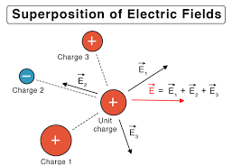
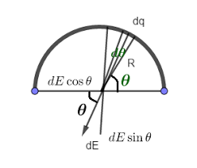

Electric field calculations are essential for understanding how charges interact and how electric forces are distributed in space. This page covers the fundamental calculations for electric fields due to point charges and charge distributions.
Basic Electric Field Formula
$$\vec{E} = k\frac{q}{r^2}\hat{r}$$
The electric field due to a point charge q at distance r is given by Coulomb's Law divided by the test charge. The field points away from positive charges and toward negative charges.
E: Electric field magnitude (N/C)
k: Coulomb's constant = 8.99 × 10⁹ N⋅m²/C²
q: Source charge (C)
r: Distance from charge (m)
r̂: Unit vector pointing from charge to field point
When multiple charges are present, the total electric field is the vector sum of the individual electric fields. This principle allows us to calculate complex field patterns by adding simpler contributions.

Multiple charges create a combined electric field through superposition.
Electric Field Due to a Charged Arc
The electric field at the center of a circle or arc of charge depends on how much of the circle is present:
Full circle: The electric field at the center is zero. Every bit of charge is balanced by an equal bit on the opposite side, so all the field contributions cancel out by symmetry.
3/4 circle: The field at the center points toward the missing quarter. The missing section means the cancellation is incomplete, so the net field is in the direction where charge is missing.
1/2 circle (semicircle): The field at the center points straight away from the flat side (along the symmetry axis that bisects the arc). The two ends of the arc both contribute in the same direction.
1/4 circle: The field at the center points along the angle bisector of the arc, in between the two ends. The field is strongest for the smallest arc, since less cancellation occurs.

The direction and strength of the field at the center depends on how much of the circle is present.
Note: The image just shows a infitesimally small arc contribution to the field at the center. The actual field points straight down after integration.
How does the field strength compare if all arcs have the same total charge?
If each arc (full, 3/4, 1/2, 1/4 circle) has the same total charge, the electric field at the center is strongest for the smallest arc and weakest (zero) for the full circle:
Full circle: The field is zero. For every bit of charge, there is an equal and opposite bit on the other side. The x and y components of the field from each segment cancel out perfectly due to symmetry.
3/4 circle: The field is nonzero and points toward the missing quarter. The cancellation is incomplete: the x and y components from the missing section are not balanced, so the net field points in that direction.
1/2 circle: The field is even stronger. Here, the x components from opposite sides cancel, but the y components (perpendicular to the diameter) all add up in the same direction, so the field points straight away from the flat side.
1/4 circle: The field is strongest. There is very little cancellation, so the field at the center is large and points along the angle bisector of the arc.
Summary: The more symmetric the arc, the more the field components cancel out. The less arc you have (with the same total charge), the less cancellation occurs and the stronger the field at the center.
Worked Examples
Example 1: Electric Field from a Single Point Charge
Problem: Calculate the electric field 3.0 m from a point charge of +5.0 μC.
Answer: The electric field has components \(E_x = 4.31 \times 10^3 \text{ N/C}\) and \(E_y = 5.75 \times 10^3 \text{ N/C}\).
Example 4: Electric Field Due to Multiple Charges
Problem: Three charges are placed at the corners of an equilateral triangle: +2.0 μC at (0,0), -1.0 μC at (2,0), and +3.0 μC at (1,√3). Find the electric field at the center of the triangle.
Solution Steps:
Center coordinates: (1, √3/3)
Calculate distances to each charge
Find individual field magnitudes
Break into x and y components
Add components vectorially
Result: \(E_{\text{total}} = 2.1 \times 10^4 \text{ N/C}\) at 45°
Answer: The electric field at the center is 2.1 × 10⁴ N/C at an angle of 45°.
Common Calculation Patterns
Distance Calculations
For charges at positions (x₁,y₁) and field point (x₂,y₂):
\(r = \sqrt{(x_2 - x_1)^2 + (y_2 - y_1)^2}\)
Vector Components
For a field at angle θ:
\(E_x = E \cos \theta\) and \(E_y = E \sin \theta\)
Unit Vector
Direction from charge to field point:
\(\hat{r} = \frac{\vec{r}}{|\vec{r}|}\)
Practice Problems
Practice Problem 1
Problem: A point charge of -6.0 μC creates an electric field. At what distance from this charge is the electric field strength 2.0 × 10⁴ N/C?
Problem: Two identical charges of +2.0 μC each are placed 3.0 m apart. What is the electric field at a point 1.0 m from one charge and 2.0 m from the other?
Click for solution
Solution:
Field from first charge: \(E_1 = k\frac{2.0 \times 10^{-6}}{(1.0)^2} = 1.80 \times 10^4 \text{ N/C}\)
Field from second charge: \(E_2 = k\frac{2.0 \times 10^{-6}}{(2.0)^2} = 4.50 \times 10^3 \text{ N/C}\)
Use vector addition: \(E_{\text{total}} = \sqrt{E_1^2 + E_2^2 + 2E_1E_2\cos\theta}\)